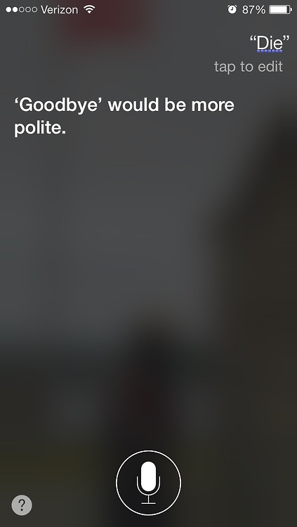

A guide to asking in-person questions and writing internet searches that will get you results.
Internet searches are so commonplace these days that searching on Google has become its own verb. However, despite the plethora of search engines within easy reach, sometimes it's necessary or more helpful to ask your question in person. Regardless of which option you choose, there are some key points to keep in mind to ensure that you will get a helpful answer.
Which One Do I Choose?
First you need to decide if it would be better to ask your question in person or online. As a rule of thumb I generally ask other people my vague or half-formed questions. For example, If I'm trying to think of a word but can't quite figure out which one to use, I'll often ask the person nearest me. They might not know the answer, but being able to interact with them in an instantaneous manner often narrows down my search, sometimes to the exact word I'm trying to think of. I could have used a search engine or thesaurus, but they don't handle vague queries very well. Even the more human-driven online forum doesn't guarantee a quick response, or one at all.
Online Forums
If you decide to post your question online, first search the forum for your topic. Someone may have had that question before, and nobody likes duplicate posts clogging up the site. If you've made an effort and still think you need to post your question, be specific. A thorough description of your problem will help others help you, and context is key. If you're asking about code, post the section of code that's giving you trouble. If you want to understand something about a foreign language, post the surrounding context (words or sentences) so that native speakers can help you choose the right word or grammatical construct for what you're trying to say. If you're trying to figure out why your computer is giving an error message, post that error message and details about your computer. Despite the importance of detail, it's also important to not overwhelm the people you're asking for help. The more you read troubleshooting posts and post your own questions, the more you'll get a feel for how to do it. A good guideline is to consider the question, “If I didn't have this screen (or page) in front of me, what information would I need to know?”
Googling
When you're using a search engine, it's usually more efficient to not use full sentences. You want to be specific (not “some way that I can store stuff and pull out one particular thing” rather “array specific element”), but unless looking for a basic fact I like to use keywords.
There is an exception to the notion of not using full sentences. If you're going to use a voice-activated search like Siri, it's better suited to full sentence questions that have simple, factual answers, such as, “When did George Harrison die?” Just make sure that you wait for the ready alert and enunciate.
One Final Point to Consider
Even if you do your best to provide a thorough (but not too wordy) description of your issue on a forum, it might take time to get a response. You might not ever get a response. Responses depend on people taking the time to read posts and offer their expertise. If you feel able you should try and chime in on someone else's question. Give as you take.